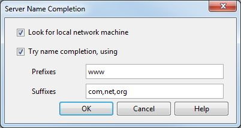

Introduction
YAML: A data serialization format
- uses an indented outline
- avoids enclosures (quotation marks, brackets, open/close tags)
- uses a hierarchical representation (tree)
- common data types (scalars, lists and maps)
- also allows for the representation of relational data
Data Types: Scalars
Scalars are simple data types, like strings, integers, boolean values or dates.
Examples:
A simple string
42
true
Data Types: Lists
For exmaple: a list of widgets
- Button
- Edit
- Label
- CheckBox
Data Types: Maps
A map spedifies a bunch of 'key:
value' pairs.
For example: the attributes of a button:
name: MyButton
string: Show
action: Show Mail Panel
icon: view_icon.png
Nesting Data: List in a Map
Lists and maps can be nested within each other. Here is where indentation comes in:
The map value is now not a simple scalar, so it is put in the next line(s) and indented.
Indentation is done using spaces. TAB indentation is not allowed.
Example: a layout object holds attributes about itself, plus a list of its child widgets
type: StackLayout
name: main layout
orientation: horizontal
elements:
- Label
- Edit
- Button
Nesting Data: Maps in a List
Also, a list doesn't necessarily just hold strings. A list can again hold nested data.
Example: a list of widgets
- type: Label
name: name_label
text: Enter name
- type: Edit
name: name_edit
- type: Button
name: save_button
text: Save
action: Save Name
Referencing Data
Sometimes you have data that you need to use in different places, and
you don't want to copy&paste all content into different places. In YAML,
you can set an anchor to a map ('&') in one place, and reference the map ('*')
in another place. The anchor is specified in the line above the map.
Example: Use a 'Save' button twice.
- type: Edit
name: firstname_edit
- &SaveButton
type: Button
name: save_button
text: Save
action: Save Name
- type: Edit
name: lastname_edit
- *SaveButton
This example is automatically expanded to:
- type: Edit
name: firstname_edit
- type: Button
name: save_button
text: Save
action: Save Name
- type: Edit
name: lastname_edit
- type: Button
name: save_button
text: Save
action: Save Name
Merging Data
Sometimes you need almost the same data in different places, changing just one
little thing. You can do this by copying in the map that you want to base your
changes on (using '<<'), and then override or add a key/value pair.
Example: Use a 'Save' button twice, but change
its name and add an icon in the second one.
- type: Edit
name: firstname_edit
- &SaveButton
type: Button
name: save_button
text: Save
action: Save Name
- type: Edit
name: lastname_edit
- <<: *SaveButton
name: save_button_2
icon: save.png
This example is automatically expanded to:
- type: Edit
name: firstname_edit
- type: Button
name: save_button
text: Save
action: Save Name
- type: Edit
name: lastname_edit
- type: Button
name: save_button_2
text: Save
action: Save Name
icon: save.png
Sample Dialog: Server Name Completion
As found in Tools -> Preferences -> Advanced -> Network -> Server Name Completion

Sample Dialog
dialogs:
- type: Dialog
name: Name Completion Dialog
title: DI_NAMECOMPLETION
content:
type: StackLayout
elements:
- type: CheckBox
name: Local_machine_checkbox
string: DI_IDM_TRY_LOCAL_TOGGLE
- type: CheckBox
name: Completion_checkbox
string: DI_IDM_TRY_NAME_COMPLETION_TOGGLE
content:
type: GridLayout
elements:
- type: GridRowLayout
elements:
- type: Label
name: label_for_Prefixes_edit
string: DI_IDM_NC_START_LABEL
- type: Edit
name: Prefixes_edit
- type: GridRowLayout
elements:
- type: Label
name: label_for_Suffixes_edit
string: DI_IDM_NC_END_LABEL
- type: Edit
name: Suffixes_edit
button-strip:
<<: *OkCancelHelpButtonStrip
help_anchor: "server.html"
definitions:
buttons:
OkButton: &OkButton
type: Button
name: ok_button
string: DI_ID_OK
action: Ok
CancelButton: &CancelButton
type: Button
name: cancel_button
string: DI_ID_CANCEL
action: Cancel
HelpButton: &HelpButton
type: Button
name: help_button
string: DI_ID_HELP
action: Show help
button-strips:
OkCancelHelpButtonStrip: &OkCancelHelpButtonStrip
type: ButtonStrip
buttons:
- *OkButton
- *CancelButton
- *HelpButton